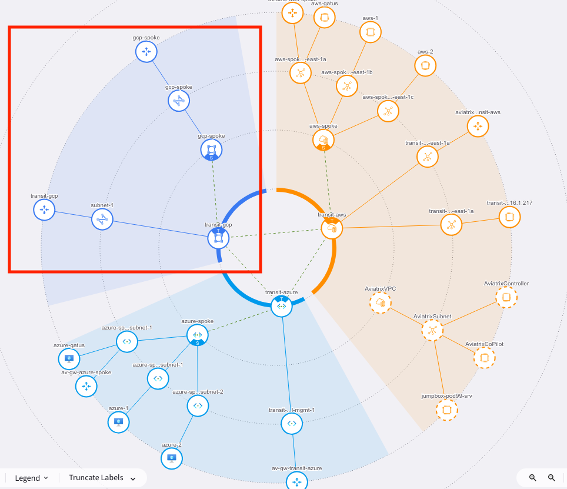

Connecting Another Cloud#
Important
Estimated time to complete: 45 minutes
In this lab, the goal is to extend your cloud network to GCP by creating:
A
GCPtransit VPC.An Aviatrix transit gateway.
Transit peerings between the
AWS,Azure, andGCPtransit gateways.An Aviatrix spoke gateway.
An Aviatrix spoke to transit attachment.
To do so, we’ll use Aviatrix terraform resources and modules.
Configure and apply#
Transit#
In this exercise we will use the individual resources in our Terraform provider to create a VPC as well as an Aviatrix transit gateway. Use the settings below and use the resource documentation in the links provided to code the resources in the student.tf file. If you get stuck, spoiler code is available at the end of this document in the Code section.
Argument |
Value |
|---|---|
Name |
transit-gcp |
Region |
us-central1 |
Region Zone |
us-central1-a |
Subnet-1 CIDR |
10.3.0.0/28 |
Subnet-2 CIDR |
10.3.0.16/28 |
Account |
gcp-account |
Instance Size |
n1-standard-1 |
Hint
Use Region for the vpc resource and Region Zone for the gateway resource. Use the examples in the documentation for GCP. Omit any ha attributes.
Once you have the code you feel will create the vpc and transit gateway, run a terraform apply to execute the changes. Review the plan and then type yes to confirm and execute the changes.
As you can see, we can deploy these building blocks through the Terraform resources of the Aviatrix provider. However, we still had to link some things together, figure out specific details, like cloud_type. When deploying a more advanced transit with HA or Firenet, we have a whole lot more things to do. This is why for these common patterns, we have off the shelf building blocks, called modules. For the next exercise we will use one of those.
Spoke#
Next we’re going to deploy a spoke vpc and gateway. This is very similar to what you did with the transit exercise. This time, we’ll use the mc-spoke module. Use version v1.7.1 and the settings below. Make sure to deploy a non-ha gateway (to save some time). Since we are bringing in a new modules, make sure to execute a terraform init before you apply.
Argument |
Value |
|---|---|
Cloud |
gcp |
Name |
gcp-spoke |
Region |
us-central1 |
CIDR |
10.3.2.0/24 |
HA |
false |
A good example to follow is the AWS greenfield spoke. Just be sure to use the GCP cloud.
Note that by using the module, you can deploy the vpc, gateway, and spoke to transit attachment with just a few lines of code!
Transit Peering#
Right now, GCP is still not connected to the other clouds. Let’s peer the GCP transit to both AWS and Azure transits to create a full-mesh peering between all clouds. Use the transit peering resource to accomplish this. After applying the change, check the topology view in CoPilot. It may take a few moments for CoPilot to reflect the gateways and connections you’ve just created.
Expected Results#
In CoPilot, navigate to Topology and view the updated map. You should now see your gateways deployed to GCP and connected to the other two clouds - all without having to learn the intricacies of the GCP terraform provider or api. Aviatrix has orchestrated this for you using the same code patterns that have been used for AWS and Azure.

Code#
GCP Transit#
Show code cell content
resource "aviatrix_vpc" "gcp_vpc" {
# GCP is cloud_type 4
cloud_type = 4
account_name = "gcp-account"
name = "transit-gcp"
# At least 1 subnet required for a transit gateway
subnets {
name = "subnet-1"
region = "us-central1"
cidr = "10.3.0.0/28"
}
subnets {
name = "subnet-2"
region = "us-central1"
cidr = "10.3.0.16/28"
}
}
resource "aviatrix_transit_gateway" "test_transit_gateway_gcp" {
# GCP is cloud_type 4
cloud_type = 4
# Account_name matches the account name as onboarded to Aviatrix
account_name = "gcp-account"
gw_name = "transit-gcp"
# Accessing the vpc_id programatically from the aviatrix_vpc resource
vpc_id = aviatrix_vpc.gcp_vpc.vpc_id
# Note the region in this case includes the zone suffix as well. "-a" in this example
vpc_reg = "us-central1-a"
gw_size = "n1-standard-1"
subnet = "10.3.0.0/28"
}
GCP Spoke#
Show code cell content
module "gcp_dev" {
# The "mc" in the module name denotes multicloud. The same module can be used to deploy gateways to any supported cloud
source = "terraform-aviatrix-modules/mc-spoke/aviatrix"
version = "1.7.1"
# Note that when using the Aviatrix modules, the Aviatrix cloud_type is normalized to cloud name
cloud = "gcp"
name = "gcp-spoke"
cidr = "10.3.2.0/24"
region = "us-central1"
account = "gcp-account"
ha_gw = false
# Accessing the transit_gw name programatically from the aviatrix_transit_gateway resource
transit_gw = aviatrix_transit_gateway.test_transit_gateway_gcp.gw_name
}
Transit Peering#
Show code cell content
resource "aviatrix_transit_gateway_peering" "gcp_azure" {
# Transit gateway names could be hard-coded. Deriving them programmatically is a best practice and allow terraform
# to map dependencies -- waiting for the transit gateway to be created before trying to create the peering
transit_gateway_name1 = aviatrix_transit_gateway.test_transit_gateway_gcp.gw_name
transit_gateway_name2 = module.mcna[0].transit_azure.transit_gateway.gw_name
}
resource "aviatrix_transit_gateway_peering" "gcp_aws" {
transit_gateway_name1 = aviatrix_transit_gateway.test_transit_gateway_gcp.gw_name
transit_gateway_name2 = module.mcna[0].transit_aws.transit_gateway.gw_name
}
Use the navigation below when you’re ready to move onto the next section.